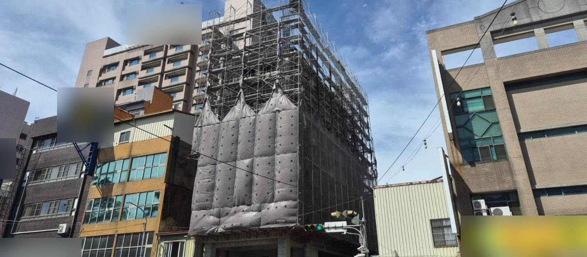
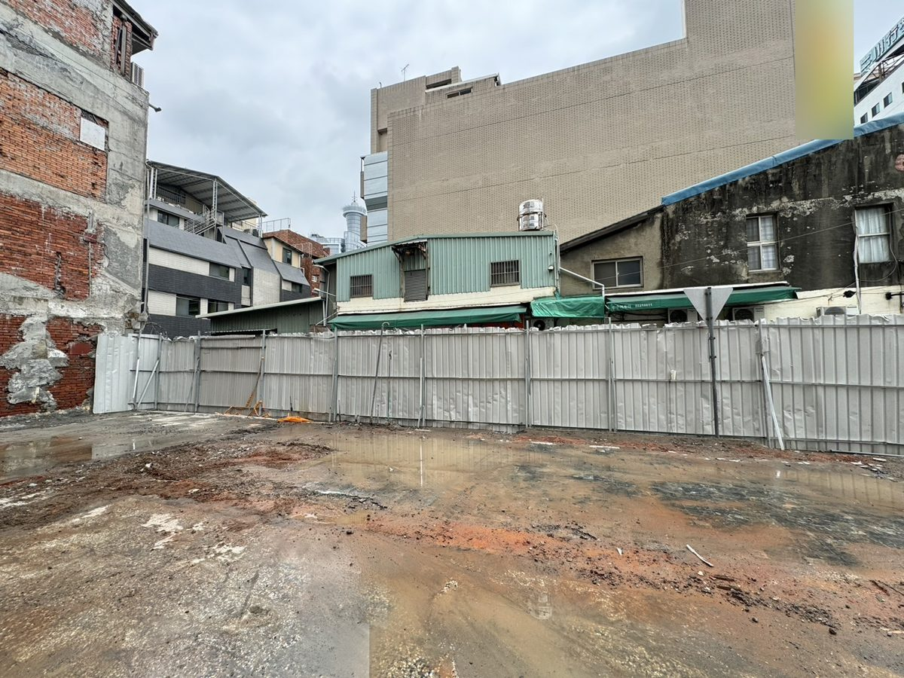
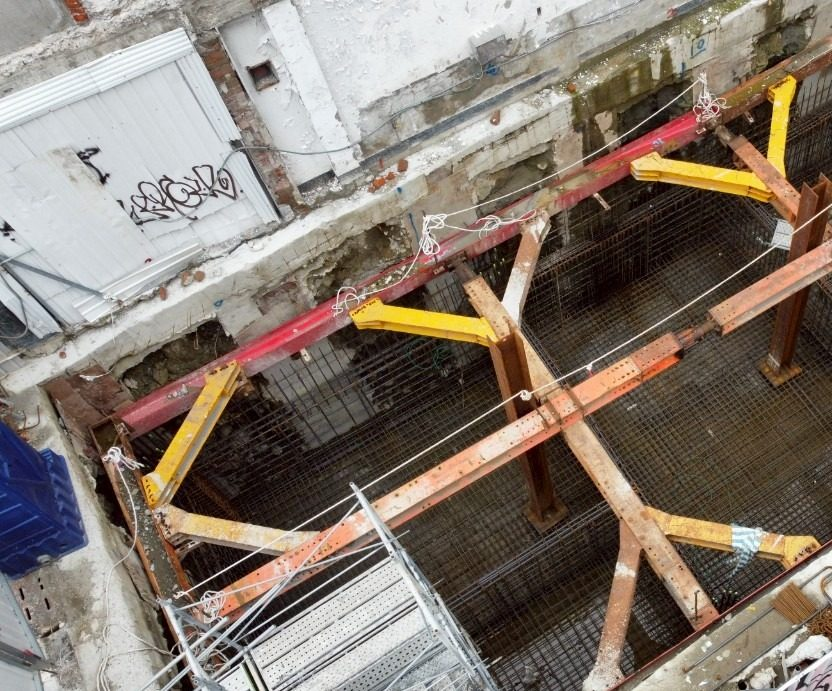
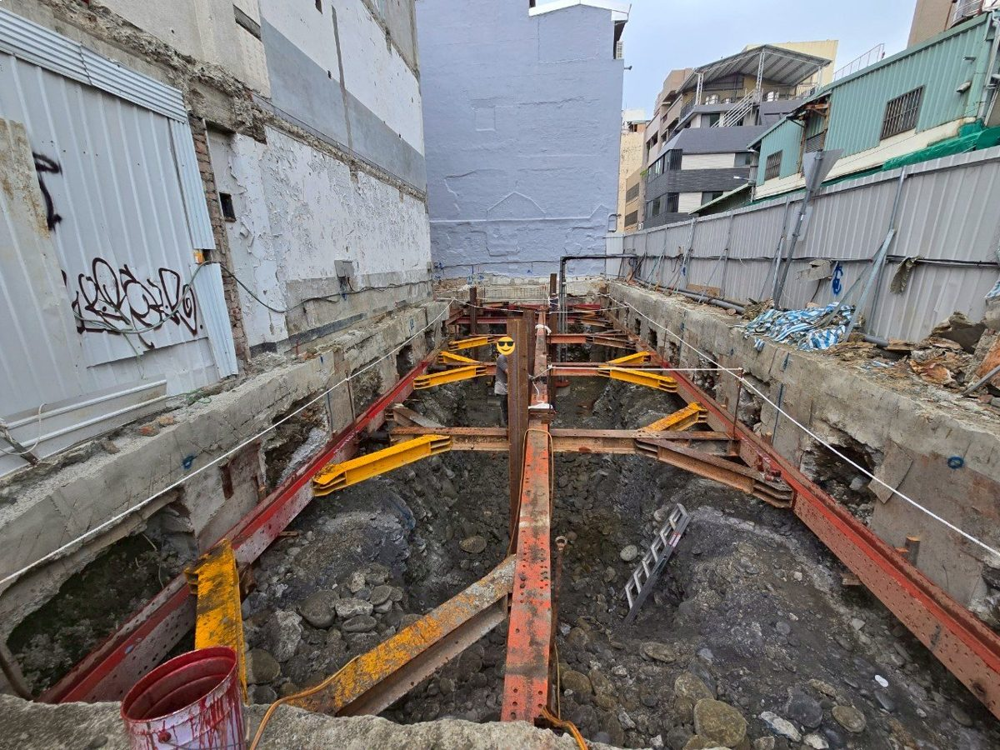
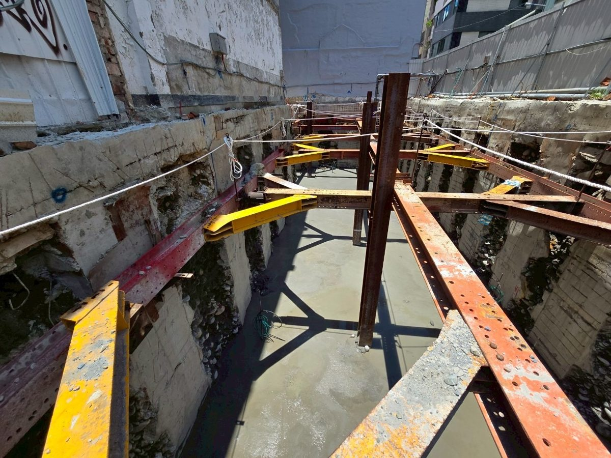
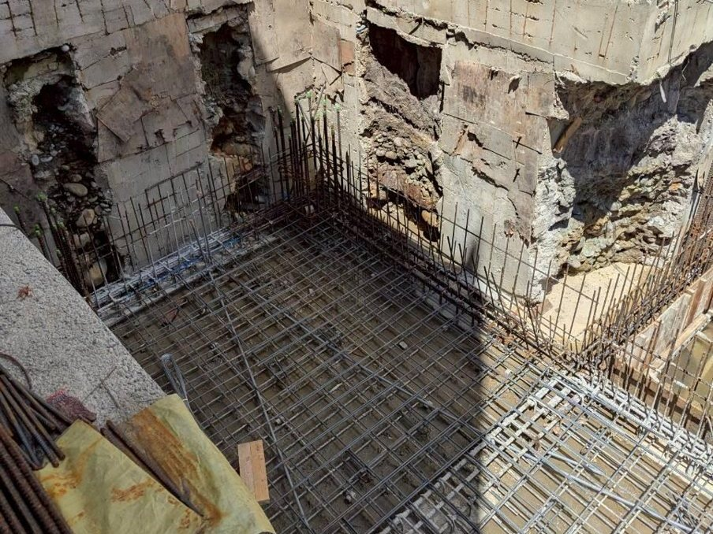
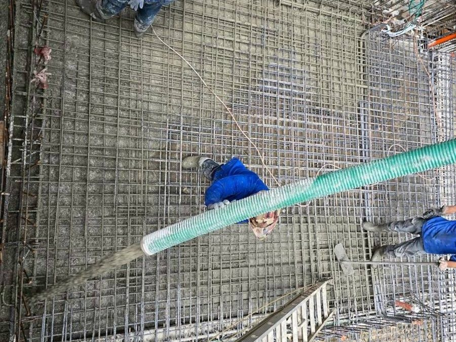
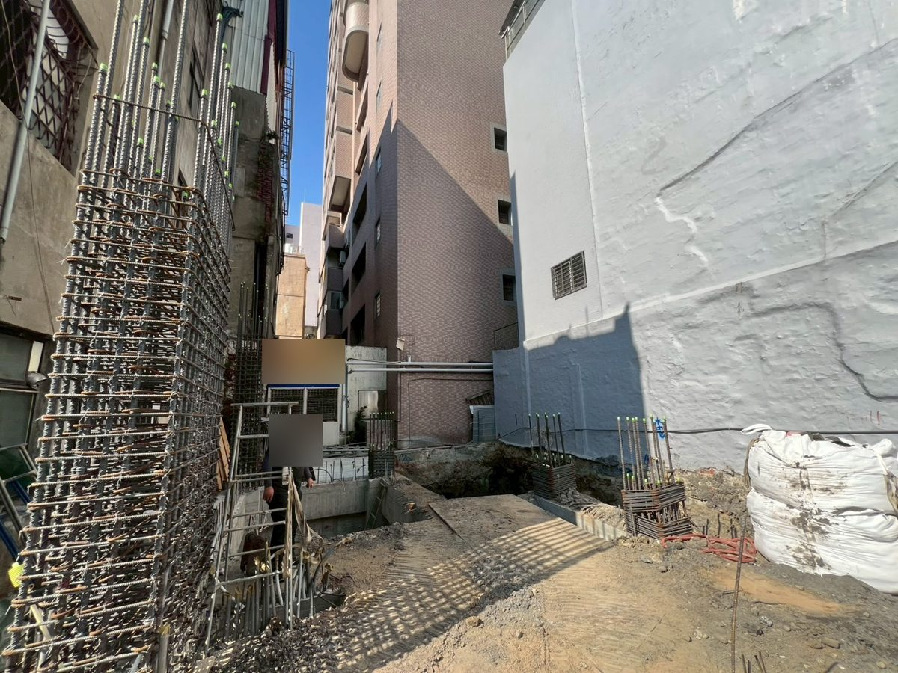
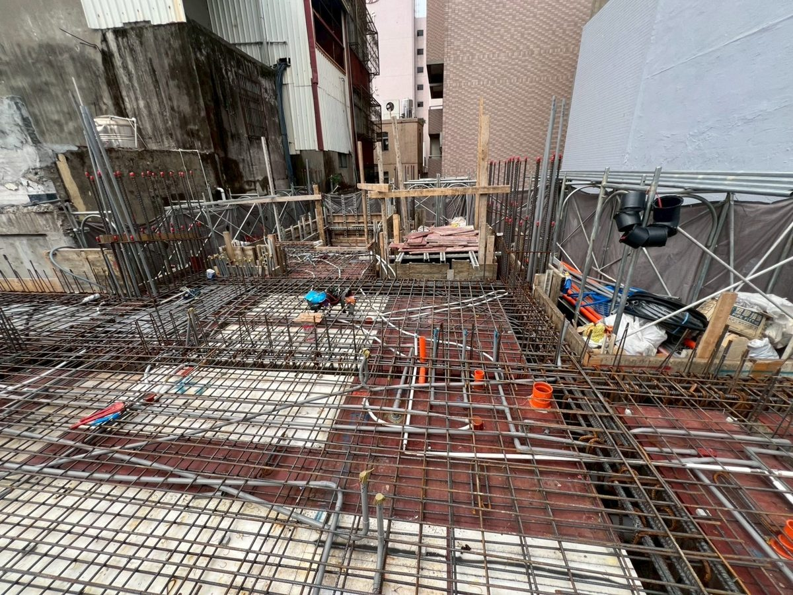
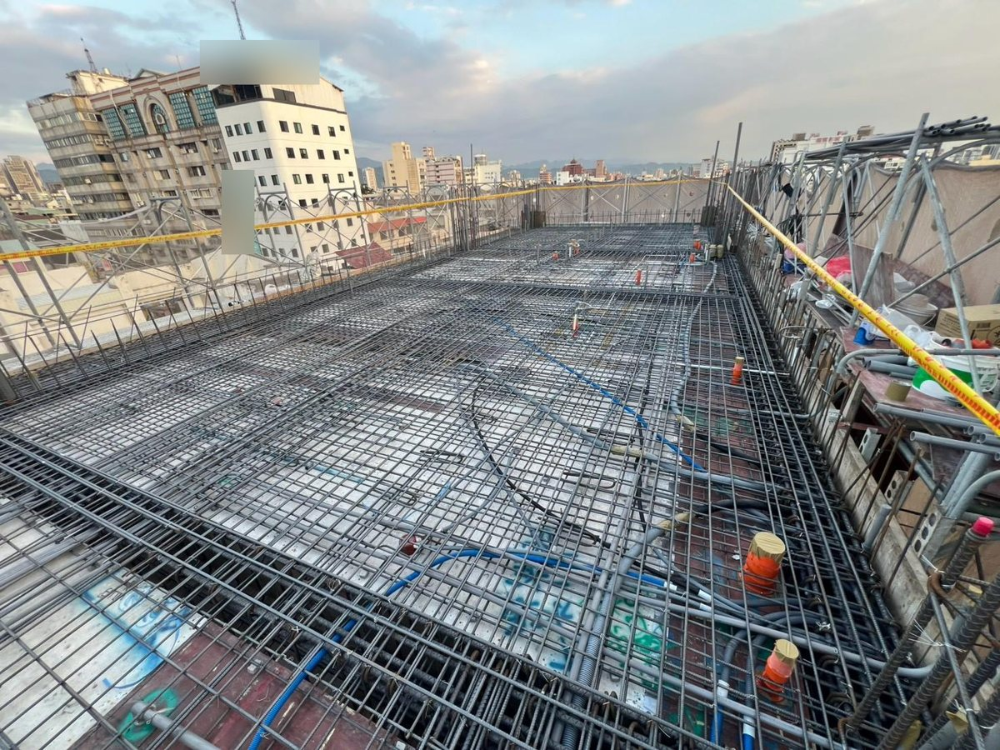

一句話：3 戶 50 多年的連棟老屋一起拆掉，合起來蓋一棟有地下室、有電梯的 7 層樓。目前結構已經做到 7 樓樓板。
| 地點 | 台中市南區 |
|---|---|
| 原本的房子 | 3 戶連棟、4 樓、沒有電梯，屋齡約 57 年 |
| 新建規模 | 地下 1 層、地上 7 層，有電梯 |
| 基地面積 | 約 73 坪 |
| 總樓地板面積 | 約 373 坪 |
| 規劃用途 | 低樓層店面、中間樓層套房出租，上面 3 層由 3 家人各自一整層自住 |
這 3 戶原本是同一排的連棟老屋，各自只有窄窄的面寬，單獨重建很難規劃電梯和停車。附近因為鐵路高架化、商圈慢慢成形，3 家人協商後決定合在一起蓋：基地變大，才有辦法做地下室、放電梯，樓上也能規劃得方正好用。
下面照著時間順序，記錄這棟房子從拆除到現在的每一個階段。
113 年 2 月～3 月
3 戶老屋一起拆除，清運完後四周圍上鐵皮圍籬，把工地和馬路、鄰居隔開。

113 年 4 月～11 月
先鑽孔了解地底下的土質和地下水，作為結構設計和開挖的依據。建造執照核准後，113 年 11 月正式開工。
113 年 12 月～114 年 4 月
把舊房子埋在地下的基礎挖掉，接著沿著基地四周做擋土牆，再架上紅色、黃色的鋼構支撐，撐住四周的土，讓隔壁房子和馬路不會因為開挖而下陷。


114 年 6 月～8 月
挖到設計深度後，先灌一層打底的混凝土，再綁基礎和地下室樓板的鋼筋，經過勘驗後灌漿。



114 年 10 月～11 月
地下室完成後往上做 1 樓：柱子的鋼筋先立起來，同時把化糞池和抽水設備放進去。

115 年 2 月～4 月
每一層樓板灌漿前，都會先確認鋼筋、水電管路都到位，通過勘驗才灌。

115 年 8 月～10 月
結構一層一層往上蓋，10 月颱風前先做好工地的防颱措施，7 樓樓板接著進行。

施工照片會隨進度陸續更新。照片中的招牌、人臉與案件資訊已遮蔽。